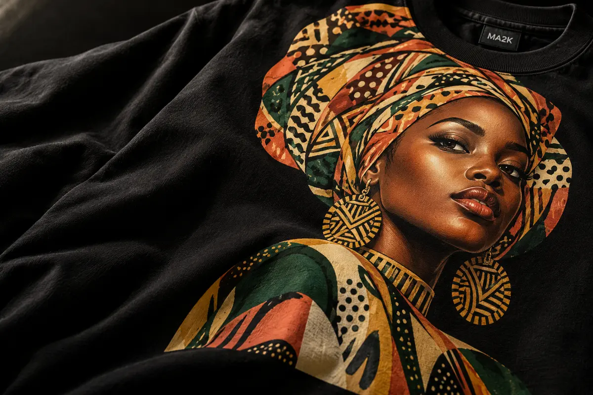
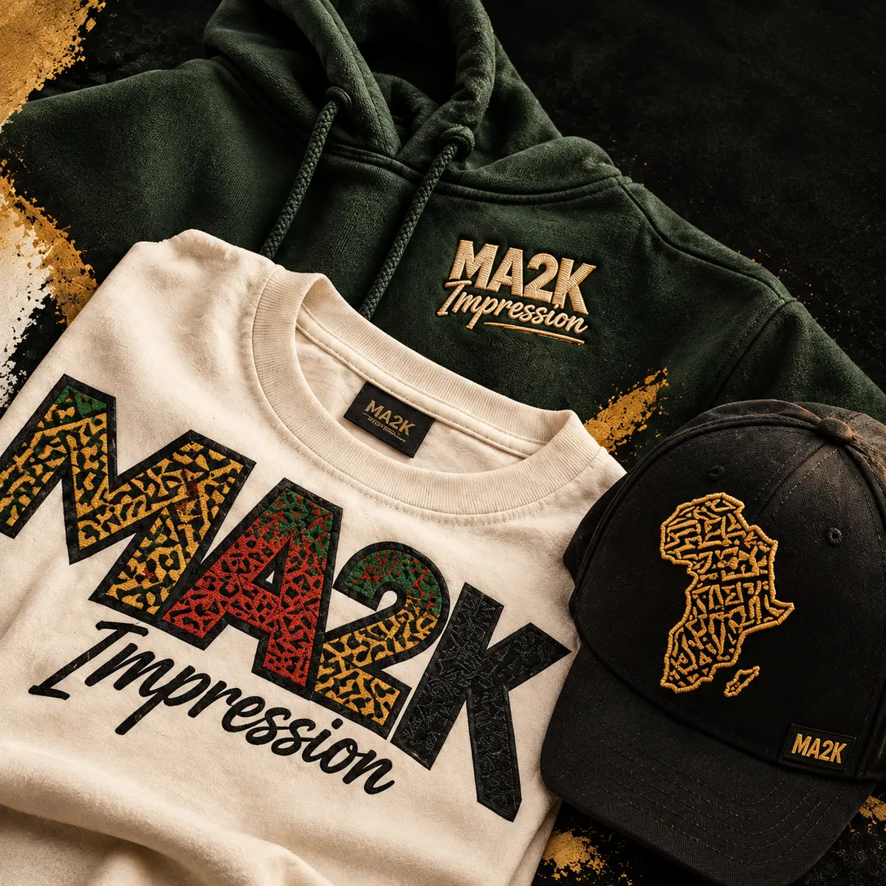

03 / DTF printing
Color with range.
DTF printing opens the door to full-color detail, gradients, fine lines and one-off personalization without losing the ease of a wearable garment.

The method
Keep the artwork detailed. Keep the order flexible.
DTF is a strong fit for artwork with gradients, many colors, small details or individual names and numbers. It gives you room to make a piece personal while keeping the production path practical for short and mixed quantities.
Best for
- Full-color illustrations and graphics
- Names, numbers and personalization
- Small runs and mixed designs
- Fine detail on cotton or blends
Think about
- Artwork scale and line detail
- Garment color and surface
- Individual variations in the order
- Placement, quantity and deadline
The DTF feeling
More color. More room to play.
When the artwork has nuance, DTF keeps that nuance visible. It is a flexible choice for creators, teams, events and brands that need variation without giving up the finished feel.

Detail without compromiseA flexible finish
Built for the details that make each piece yours.
DTF works especially well when every garment does not need to be identical. Tell us where the art changes and we will help you map the order.
Review the art
We look at color, line detail, transparency and the intended scale.
Map the variation
Names, numbers, sizes and alternate graphics can be planned together.
Choose the garment
Color, fabric and fit help the transfer feel integrated with the piece.
Press the story
Approved details move into production with color and placement in focus.
Ready for color
Keep the detail. Make it wearable.
Send the artwork, the quantity and the variations you have in mind.